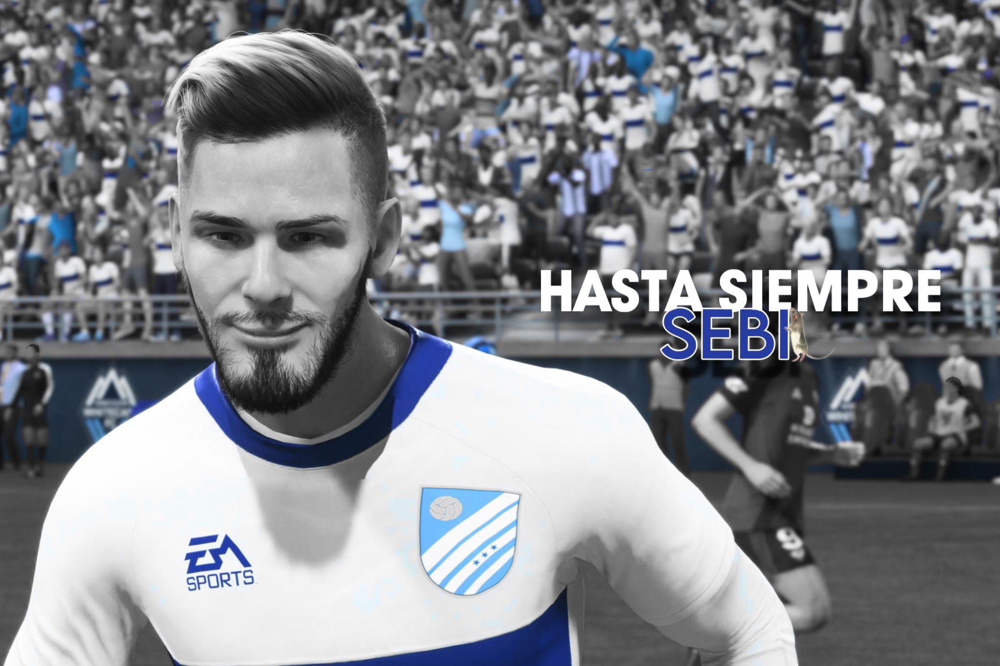

Tw Xerez
Tw Xerez
Sebi causa baja en Tw Xerez


Desde Tw Xerez queremos informar de la salida inmediata del que hasta hoy era nuestro portero titular, Sebi.
A escasas cuatro horas del inicio de la competición, hemos vivido una situación que consideramos profundamente lamentable y antideportiva. TwBetis, organizadores de la KL Pro League, ha ejercido presión directa sobre nuestro jugador para que abandonase nuestra disciplina y regresara a su equipo original, Twitter Betis.
Esto no solo ha afectado gravemente nuestra planificación deportiva, sino que demuestra una total falta de respeto hacia los valores básicos de una competición sana y justa. Como club, estamos muy molestos con lo sucedido. Nos parece inadmisible que, desde una posición de organización, se manipulen situaciones para beneficio propio, alterando el equilibrio competitivo.
En cuanto a Sebi, lamentamos profundamente su decisión. No vamos a desearle suerte en su nuevo camino porque consideramos que ha faltado a la palabra dada a este equipo y a sus compañeros.
Tw Xerez seguirá adelante, más unido que nunca, con la firme convicción de que la lealtad, el respeto y la honestidad valen más que cualquier resultado.